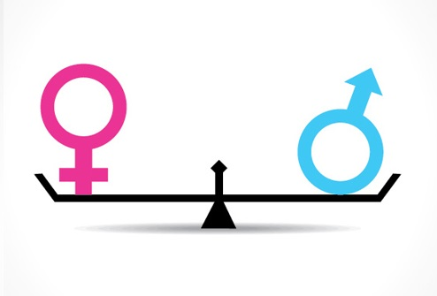

¿Qué es la perspectiva de género y por qué es importante?

Aunque la igualdad de género está protegida por diversos tratados e instrumentos internacionales, siguen existiendo importantes desigualdades entre hombres y mujeres. Con frecuencia las niñas y las mujeres sufren discriminación en la salud, la educación, la representación política o el mercado laboral, y esa discriminación tiene efectos negativos en su vida. En este post queremos hablarte de la perspectiva de género, de su importancia y de cómo aplicarla a un proyecto.
Aunque durante los últimos años se han producido avances, la desigualdad sigue existiendo y los datos lo demuestran:
Según datos de la Unesco, 16 millones de niñas nunca irá a la escuela y las mujeres representan 2/3 de los 750 millones de adultos que carecen de conocimientos básicos de alfabetización.
A nivel mundial, en base a los datos de ONU Mujeres, las mujeres solo ganan 77 céntimos por cada dólar que ganan los hombres. Además, la brecha salarial aumenta en el caso de las mujeres con hijas e hijos.
Las mujeres licenciadas en España representan el 60% de los licenciados y el 45% del mercado laboral, pero al llegar a la alta dirección de las compañías el porcentaje es del 10%, según datos del informe La mujer directiva en España de PWC.
¿Qué es la perspectiva de género?

La palabra perspectiva hace referencia a una forma de ver o analizar una determinada situación o de tener un punto de vista. Es decir, se trata de analizar la forma en la que la sociedad entiende que deben comportarse los sexos. Por ejemplo, se asocia el hecho de que la mujer deba ocuparse de la familia mientras el hombre trabaja y esto se traduce en desigualdades sociales como las que hemos visto en el apartado anterior.
La perspectiva de género, por lo tanto, permite analizar la forma en la que se crean y perduran sistemas sociales a partir de un determinado punto de vista del sexo, el género y la orientación sexual.
Los elementos fundamentales para entender la perspectiva de género son los siguientes:
Reconocimiento de que la forma de ver el género puede ser diferente dependiendo de las sociedades y de las épocas.
Análisis relativo a que el género nos atribuye, socialmente, unas determinadas características.
Existencia de una desigualdad entre lo femenino y lo masculino, de forma que predomina lo masculino.
Influencia del género en muchos ámbitos como la economía, el trabajo, la educación, las relaciones entre hombres y mujeres, etc.
La idea de que el género se ve influido por otros elementos como la edad o el estado civil.
La base de la perspectiva de género es la búsqueda de la igualdad para evitar situaciones de marginación, violencia e injusticia.
¿Cómo aplicar la perspectiva de género a un proyecto?

La planificación sensible al género supone:
Reconocer expresamente que existe una desigualdad entre hombres y mujeres, tal y como demuestran los datos que hemos visto al inicio del post.
Analizar las necesidades de las mujeres para que tengan voz en el proyecto y para empoderarlas.
Ver las capacidades técnicas desde la perspectiva de género.
Generar espacios para el debate entre hombres y mujeres.